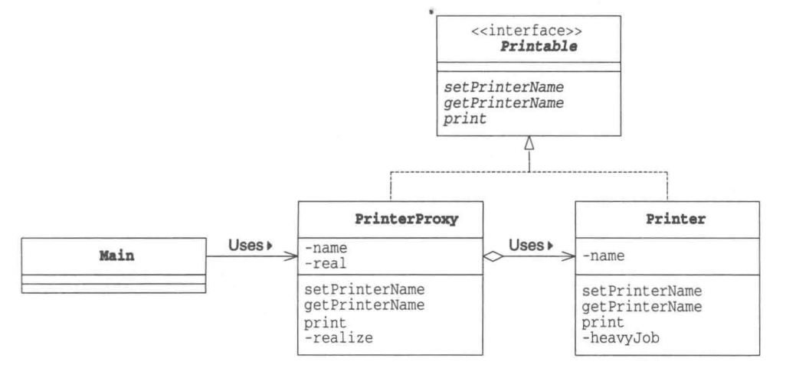
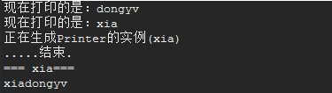
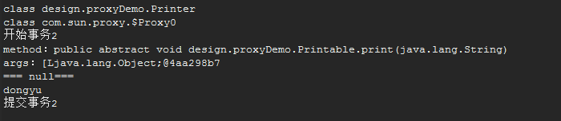

2017-12-28设计模式(二)————————proxy模式学习笔记
结构
代理模式是指代替别人进行工作，以便于通过代理对象就可以访问到目标对象的方法。他的好处就在于可以在代理类中拓展目标对象的功能。

Printable类:目标对象和代理对象共同执行的接口。
Printer类:目标对象类,表示的是带名字的打印机类(本人)。同时实现Printable接口。
PrinterProxy类:代理对象类,实现Printable接口，并依赖Printer类，最后调用本人的方法。
代理模式的关键点就在于，目标对象和代理对象都实现对象的接口，同时，目标对象是代理对象的拓展，目标函数需要代理函数进行实现。
静态代理
Printable类
public interface Printable {
public abstract void setPrinterName(String name);//设置名字
public abstract String getPrinterName();//获取名字
public abstract void print(String string);//显示文字（打印）
}
Printer类
public class Printer implements Printable{
private String name;
public Printer() {
heavyJob("正在生成Printer的实例");
}
public Printer(String name) {
this.name = name;
heavyJob("正在生成Printer的实例("+name+")");
}
public void print(String string) {
System.out.println("=== "+name + "=== ");
System.out.println(string);
}
private void heavyJob(String msg) {
System.out.println(msg);
for(int i=0;i<5;i++) {
try {
Thread.sleep(1000);
} catch (InterruptedException e) {
e.printStackTrace();
}
System.out.print(".");
}
System.out.println("结束.");
}
@Override
public void setPrinterName(String name) {
this.name = name;
}
@Override
public String getPrinterName() {
return name;
}
}
PrinterProxy类
public class PrinterProxy implements Printable{
private String name;//名字
private Printer real;//本人
public PrinterProxy() {
}
public PrinterProxy(String name) {
this.name = name;
}
@Override
public synchronized void setPrinterName(String name) {
if(real != null) {
real.setPrinterName(name);//设置本人名字
}
this.name = name;
}
@Override
public String getPrinterName() {
return name;
}
@Override
public void print(String string) {
realize();
real.print(string);//具体调用了，本人的打印方法
}
private synchronized void realize() {
if(real == null) {
real = new Printer(name);
}
}
}
Main类
public class Main {
public static void main(String[] args) {
Printable p = new PrinterProxy("dongyv");
System.out.println("现在打印的是："+p.getPrinterName());
p.setPrinterName("xia");
System.out.println("现在打印的是："+p.getPrinterName());
p.print("xiadongyv");
}
}
输出结果

上面静态代理的例子中，代理类是自己定义好的，在程序运行之前就已经编译完成。如果出现问题，那么就需要维护俩套内容。动态代理，则可以解决上述问题
动态代理
动态代理对象的生成,是利用JDK的API,动态的在内存中构建代理对象。动态代理的优势在于可以很方便的对代理类的函数进行统一的处理，而不用修改每个代理类中的方法。
JDK中动态代理的api
java.lang.reflect.Proxy 包中的 static Object newProxyInstance(ClassLoader loader, Class[] interfaces,InvocationHandler h )
ClassLoader loader,:指定当前目标对象使用类加载器
Class[] interfaces,:目标对象实现的接口的类型
InvocationHandler h:事件处理,执行目标对象的方法时,会触发事件处理器的方法,会把当前执行目标对象的方法作为参数传入
动态代理原理:https://www.cnblogs.com/gonjan-blog/p/6685611.html
代码实现:ProxyFactory类(动态代理类工厂)
https://www.cnblogs.com/cenyu/p/6289209.html
public class ProxyFactory{//创建动态代理对象动态代理不需要实现接口,但是需要指定接口类型
//维护一个目标对象
private Object target;
public ProxyFactory(Object target){
this.target=target;
}
//给目标对象生成代理对象
public Object getProxyInstance(){
return Proxy.newProxyInstance(
target.getClass().getClassLoader(),
target.getClass().getInterfaces(),
new InvocationHandler() {
@Override
public Object invoke(Object proxy, Method method, Object[] args) throws Throwable {
System.out.println("开始事务2");
//执行目标对象方法，反射
Object returnValue = method.invoke(target, args);
System.out.println("提交事务2");
return returnValue;
}
});
}
}
Main类
public static void main(String[] args) {
// 目标对象
Printable target = new Printer();
// 【原始的类型 class cn.itcast.b_dynamic.UserDao】
System.out.println(target.getClass());
// 给目标对象，创建代理对象
Printable proxy = (Printable) new ProxyFactory(target).getProxyInstance();
// class $Proxy0 内存中动态生成的代理对象
System.out.println(proxy.getClass());
// 执行方法 【代理对象】
proxy.print("dongyu");
}
输出结果

代理对象不需要实现接口,但是目标对象一定要实现接口,否则不能用动态代理。对应这个子类的实现方法，还有一个代理的方式叫做:Cglib代理。这里也不做阐述(持续学习中)。继续努力，加油。
关键字词：设计模式、proxy、代理